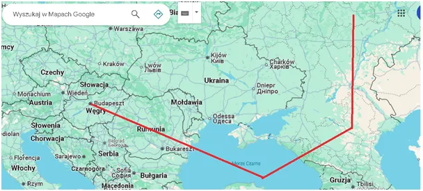
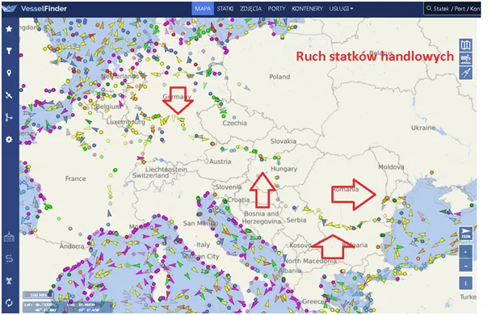

Będzie wojna, ale Niemiec z USA i skąd PiS weźmie 40%?
Jak do Budapesztu doleci Putin? Odpowiedź brzmi: samolotem. Jest to mało ważne pytanie techniczne, ale ono rozpala internet od 24 h. W Budapeszcie wyznaczono spotkanie Trumpa i Putina i jest to wieki sukces Węgier. Orban od początku wojny kupuje "ruską ropę" i blokuje pomoc dla Ukrainy z jednego prostego powodu: Ukraina wrogo się zachowuje w stosunku do mniejszości węgierskiej w Karpatach i jest naturalnym wrogiem państwa węgierskiego, powstała na ruinach ZSRR kosztem rozbioru Węgier w 1920 roku. W sumie państwo polskie jest w analogicznej sytuacji w stosunku do Ukrainy, ale tego ordynarnie nie zauważa. Współczesne Węgry budują swą tożsamość na historycznej wielkości i nie ukrywają aspiracji do zwrotu terytoriów, ale na to muszą jeszcze poczekać. Obecnie są liderem w anty-unijnej polityce, a wokół nich rośnie Słowacja, Czechy, Austria... Pisałem o tym tu : https://pawelklimczewski.pl/2025/09/27/szmer-nadchodzacej-lawiny-po-slowackiej-stronie-wierchow/
Jak widać na mapie droga z Rosji na Węgry jest bardzo prosta, wiedzie przez Morze Czarne i Rumunię, całkowicie kontrolowaną przez USA. Status Putina jako "zbrodniarza" jest identyczny jak Netanjahu, który lata sobie swobodnie po całym świecie, a szczególnie po niebie amerykańskim.

Rozgrywka Orbana nie przebiega bez konsultacji z Chinami. Węgry już dekadę temu postawiły na swój rozwój w ramach "Jedwabnego Szlaku", bo realnie innej opcji nie mają. Ich szansą jest centralne położenie, w tym żegluga na Dunaju, która w gospodarce Niemiec jest bardzo ważnym elementem wymiany handlowej ze wschodem.

Spotkanie Trampa Z Putinem w centrum Europy to siarczysty policzek dla Brukseli i Berlina. Informacja pojawiła się dosłownie chwilę po uchwaleniu przez UE gigantycznego budżetu wojennego, w tym, można odnieść wrażenie z wypowiedzi Brukseli, głównie na walkę z dronami ze styropianu. USA ma dużo problemów i wpuszczenie Chin do Europy to fatalne rozwiązanie, ale celem zasadniczym amerykańskiej polityki w Europie jest likwidacja gospodarki niemieckiej. Zmiana polityczna w Europie Wschodniej i emancypacja tych państw to najszybsza droga do odcięcia Niemiec od żywotnych soków naszych gospodarek, którymi żywią się Niemcy. Kolejnym logicznym krokiem będzie upadek rządu Tuska na co USA nie powinny czekać do wyborów w 2027. Zatem nie wszystko stracone, żal tylko, że w Polsce w blokach do koryta już czeka PiS, który "idzie po 40 %". Skąd niby ma brać te 40% w wyborach do sejmu? Odpowiedź jest smutna , PiS już ma te 40% w koalicji z neokonfederacją, dziś już niewiele ich różni.
Paweł Klimczewski